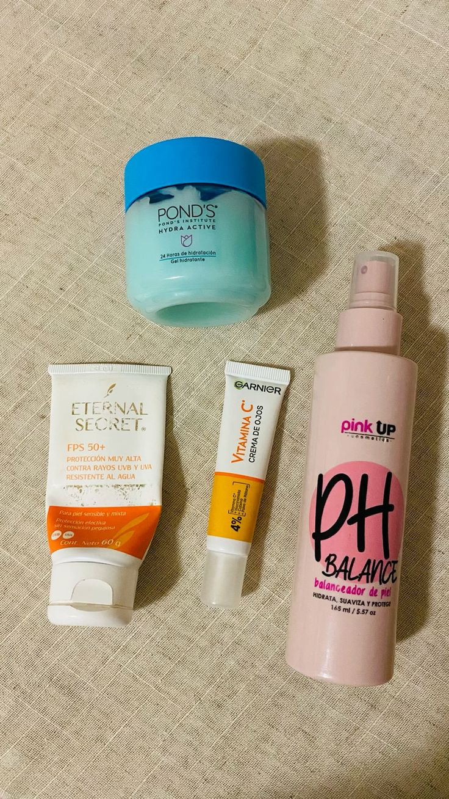

Preparación de la piel
Introducción
Información relevante sobre preparación de la piel. Esta sección introduce el tema de preparación de la piel en el mundo del maquillaje.
Desarrollo
Exploramos aspectos importantes de preparación de la piel, técnicas, productos recomendados y errores comunes.
Tips
- Usa productos adecuados para tu tipo de piel.
- Practica las técnicas antes de aplicarlas para eventos importantes.
- Invierte en herramientas de calidad.
Conclusión
Preparación de la piel es un elemento esencial en el maquillaje. Dominarlo te ayudará a lograr un look profesional.